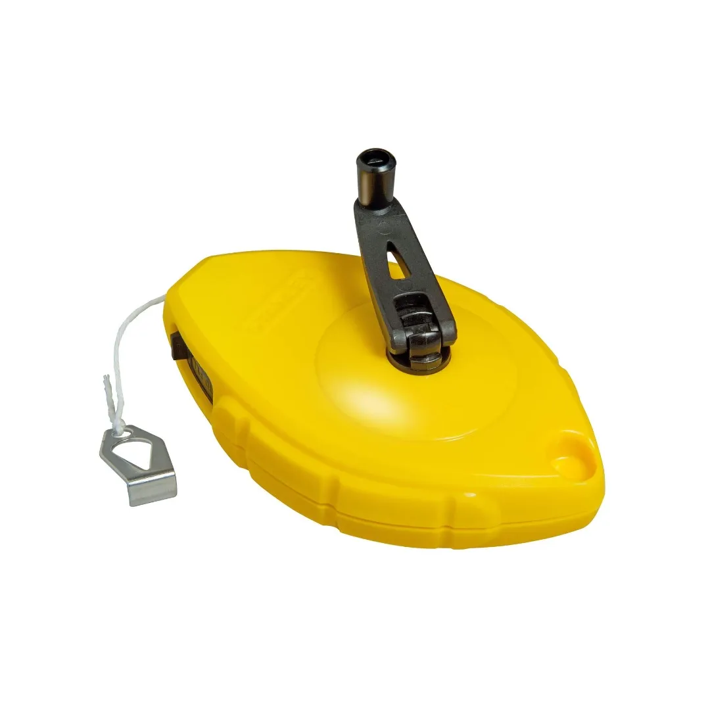
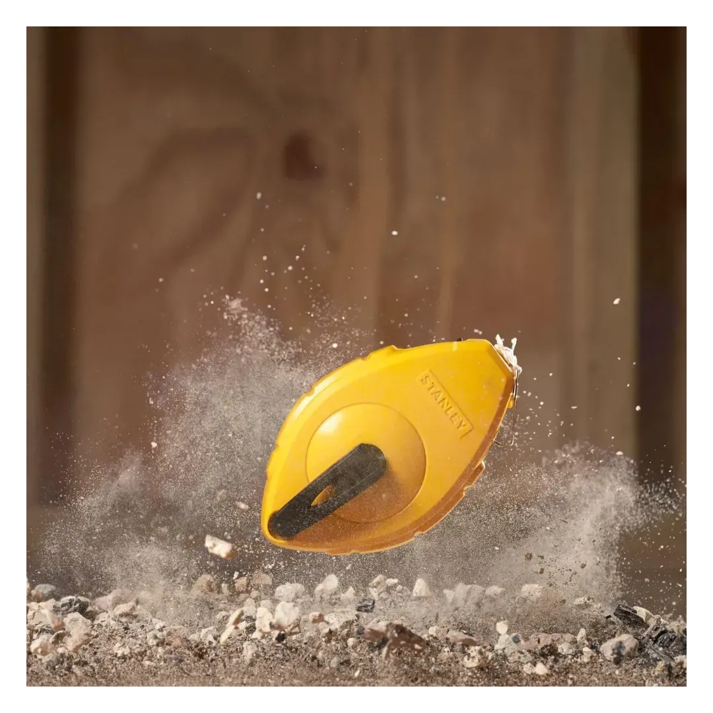

STANLEY | CHALKLINE REEL ABS 30M -6
0-47-440



The STANLEY 30m Chalk Line Reel is designed to make marking straight lines for your projects faster and more accurate. Ideal for both professional use and DIY projects, this chalk line reel features a durable design and thoughtful features to make every job easier.
Key Features
- Chalk Capacity : Holds 30g/1oz of chalk, providing plenty of chalk for multiple uses.
- Versatile Use : Can be used vertically as a plumb bob, making it perfect for both horizontal and vertical measurements.
- Durable Construction : Made with a high-impact ABS case for added strength and durability, designed to handle tough environments.
- Large String Capacity : Holds up to 100ft of string, ensuring you can mark longer distances without needing to reposition the reel.
- Ergonomic Design : The reel has been redesigned for comfort and ease of use, with a smooth crank that folds neatly into the case for convenient storage.
- Stainless Steel End Hook : The rust-resistant stainless steel hook provides durability and smooth operation during use.
- Quick Chalk Refill : A sliding door allows for quick and easy refilling of the chalk, minimizing interruptions to your work.
Why Choose the STANLEY 30m Chalk Line Reel?
Whether you're working on a building site, laying down tiles, or simply need to mark a straight line, the STANLEY 30m Chalk Line Reel is a reliable tool that ensures accuracy and ease. Its rugged construction and user-friendly design make it a great choice for both professionals and DIY enthusiasts.
Specifications
| Rating | Industrial |
| Length | 30 m |
| Material | ABS Plastic |
Includes